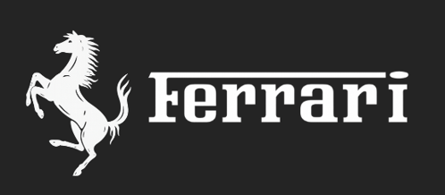
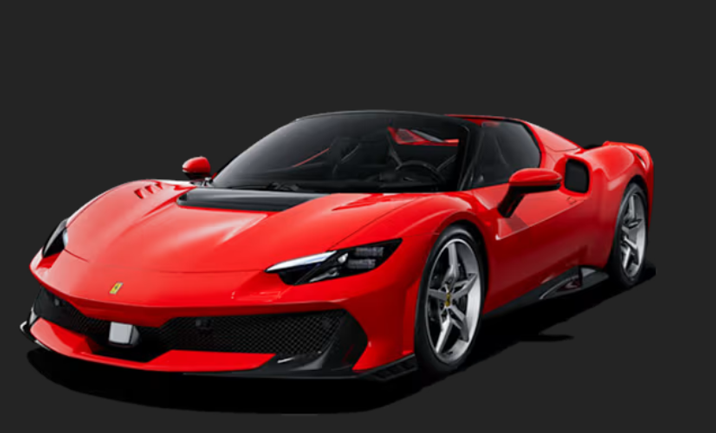
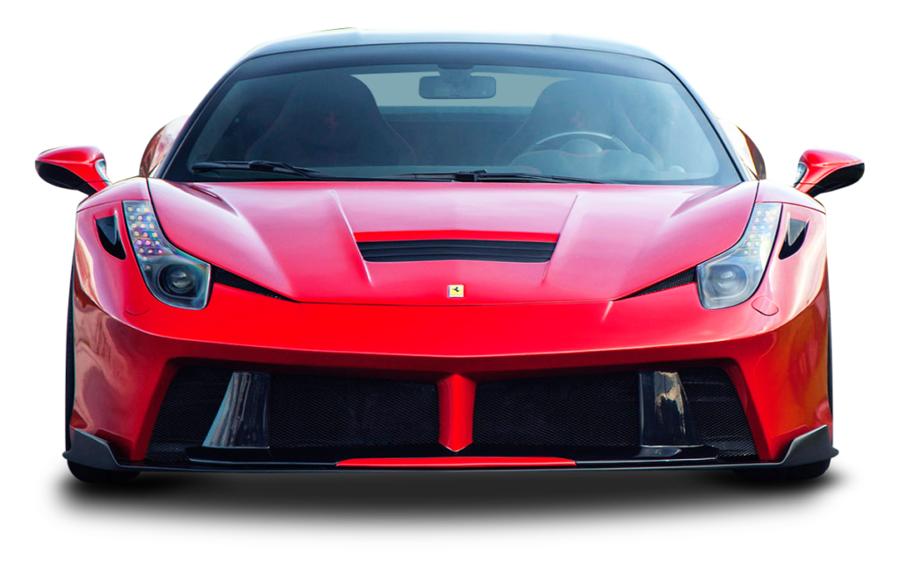
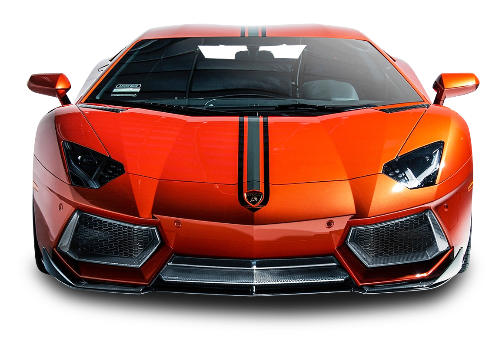
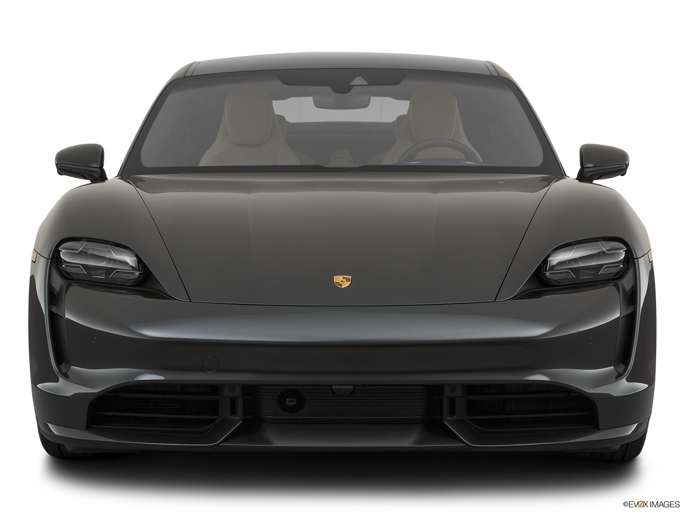

A Ferrari 296 Speciale é uma versão mais extrema e focada em
desempenho do 296 GTB,criada para oferecer uma experiência de
condução ainda mais esportiva e próxima de um carro de pista.
O modelo combina um motor V6 biturbo com um sistema híbrido
plug-in, gerando cerca de 880 cv de potência total, o que o torna um
dos Ferraris de tração traseira mais potentes já produzidos.
Ele acelera de 0 a 100 km/h em cerca de 2,8 segundos e ultrapassa os
330 km/hde velocidade máxima, mostrando desempenho típico de
supercarros de elite.

Comprar uma Ferrari não é só adquirir um carro — é entrar em um
universo de exclusividade, tradição e emoção.
A Ferrari representa o auge do automobilismo mundial. Cada modelo
carrega décadas de história nas pistas, especialmente na Formula 1,
onde a marca construiu sua reputação de velocidade e inovação.
O maior diferencial está na experiência ao dirigir. O som do motor,
a resposta imediata do acelerador e a precisão nas curvas criam uma
sensação única, difícil de encontrar em qualquer outro carro. Não é
apenas transporte — é emoção pura.
Além disso, uma Ferrari é sinônimo de status e exclusividade. A
produção é limitada e muitos modelos são feitos para clientes
selecionados, o que torna cada carro algo raro e altamente
valorizado. Em muitos casos, o veículo até valoriza com o tempo,
virando item de coleção.
Outro ponto forte é o design icônico. Ferraris são reconhecidas
instantaneamente, com linhas agressivas e elegantes que chamam
atenção em qualquer lugar.

Comprar uma Lamborghini é escolher impacto, emoção e personalidade
extrema em cada detalhe.
A Lamborghini sempre teve uma proposta clara: criar carros mais
ousados, agressivos e chamativos que qualquer concorrente. Desde a
sua origem, a marca ficou famosa por desafiar padrões e entregar
máquinas que impressionam tanto pelo visual quanto pelo desempenho.
O primeiro motivo para escolher uma Lamborghini é o design.
Linhas afiadas, estilo futurista e presença marcante fazem com que o
carro chame atenção instantaneamente — é impossível passar
despercebido.
Outro grande diferencial é a experiência
visceral ao dirigir. Motores como o V10 e V12 aspirados entregam um
som alto, bruto e emocionante, criando uma conexão direta entre
carro e motorista. É menos sobre sutileza e mais sobre intensidade.
A Lamborghini também oferece desempenho extremo, com
acelerações impressionantes e tecnologia avançada inspirada nas
pistas. Cada modelo é pensado para proporcionar adrenalina máxima,
seja na estrada ou em um track day.
Além disso, há o fator
exclusividade e estilo de vida. Ter uma Lamborghini é fazer parte de
um grupo seleto de pessoas que valorizam ousadia e não têm medo de
se destacar.

Comprar um Porsche é escolher equilíbrio perfeito entre desempenho,
luxo e uso no dia a dia.
A Porsche é conhecida por construir carros que não são apenas
rápidos, mas também extremamente refinados e confiáveis. Diferente
de outras supermarcas, a Porsche entrega performance sem abrir mão
do conforto e da praticidade.
Um dos maiores motivos para
comprar é a dirigibilidade incomparável. Modelos como o Porsche 911
são famosos pela precisão nas curvas, estabilidade e sensação de
controle total — seja na estrada ou na pista.
Outro ponto
forte é a versatilidade. Um Porsche pode ser usado no dia a dia sem
dificuldades: é confortável, tecnológico e bem-acabado, mas ao mesmo
tempo pode entregar alto desempenho quando você quiser acelerar.
A marca também se destaca pela qualidade de construção. Os
carros são duráveis, bem projetados e tendem a manter valor ao longo
do tempo, o que torna a compra mais racional dentro do segmento de
luxo.
Além disso, o design da Porsche é clássico e atemporal —
não depende de exageros para chamar atenção, sendo elegante e
reconhecível em qualquer lugar.

Na nossa empresa, transformar a compra do seu carro em uma
experiência de luxo é a nossa prioridade. Por isso, cuidamos de cada
detalhe do processo:
1.Sourcing Global: buscamos unidades específicas em leilões fechados e
coleções privadas ao redor do mundo, garantindo acesso a veículos
exclusivos que você não encontraria de outra forma.
2.Curadoria de Histórico: cada carro passa por uma verificação completa
de procedência, revisões em concessionárias autorizadas e avaliação
detalhada da pintura e estética, para que você receba um veículo em
perfeitas condições.
3.Logística Invisível: entregamos o carro de forma técnica e discreta, em
caminhões fechados, garantindo que ele chegue até você sem rodagem
extra, como se tivesse acabado de sair da fábrica.
Nosso compromisso: você recebe seu carro com segurança, exclusividade
e qualidade máxima, e uma experiência que reflete o verdadeiro luxo da
aquisição.
Nosso serviço vai muito além da venda de um carro - ele é pensado para oferecer uma
experiênciacompleta e pernalizada:
Voçê tem acesso direto a um consultos especializado, sem
formulários genéricos ou intermediários.Cada interação é
personalizada para suas necessidades.
Cuidamos do seu portifólio de veículos, acompanhando a
valorização de cada ativo ao longo dos anos, garantindo
que seu investimento seja protegido e otimizado.
nossos clientes são convidados para experiências únicas,
como track days privados e lançamentos excluisivos das
principais marcas de luxo , colocando você sempre á frente
em acesso e oportunidades.